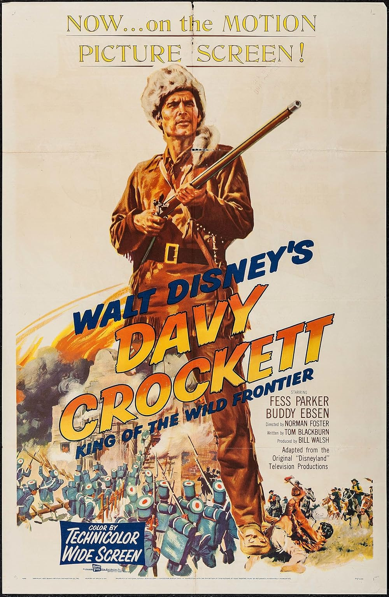

Identity Registry
Enter your lineage credentials to access the Master Archive.
Enter your lineage credentials to access the Master Archive.

The Connection: Crockett served in the 2nd Regiment of Tennessee Volunteer Mounted Riflemen alongside the Williamson and Perry ancestors during the Creek War (1813).

The Connection: Abraham Lincoln viewed Henry Clay as his "beau ideal" of a statesman. Our family records show the Clay brothers served as a physical and political guard for the administration during the most volatile years of the 19th century.